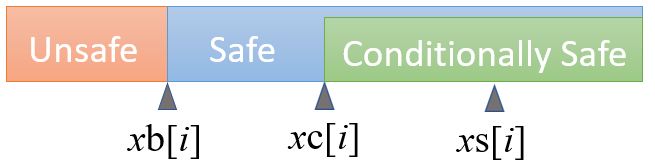
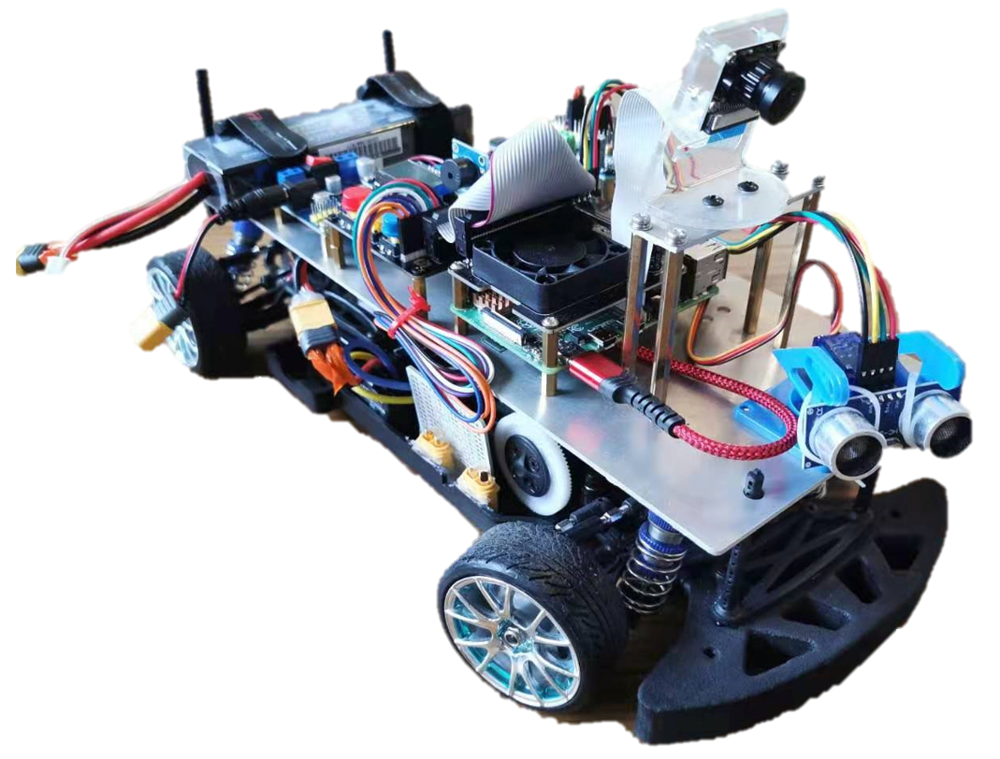

About Me
I am a PhD candidate in Computer Science and Engineering Department at Syracuse University. My advisor is Professor Fanxin Kong , and we are currently working on recovery and security problems in Cyber-physical Systems. I received my bachelor degree from University of Toronto in 2018 and I received my master degree from Syracuse University in 2020. I worked on several projects of NLP and scientific computing problems before I joined the PhD program.
Research Interests
Cyber-physical System, Machine Learning and Security.
Publications

Real-Time Data-Predictive Attack-Recovery for Complex Cyber-Physical Systems
RTAS (Real-Time and Embedded Technology and Applications Symposium) 2023 conditionally accepted

Fail-Safe: Securing Cyber-Physical Systems against Hidden Sensor Attacks
RTSS (Real-Time Systems Symposium) 2022

Adaptive Window-based Sensor Attack Detection for Cyber-physical Systems
DAC (Design Automation Conference) 2022